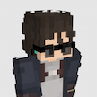
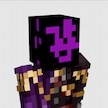
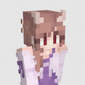
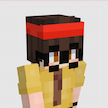
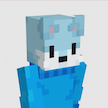
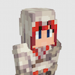
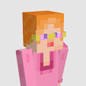

Quackity
FUNDADOR / CREADORCreador de contenido mexicano y fundador del proyecto QSMP, conocido por eventos y formatos multilingües.
Conoce a los miembros de la isla, sus historias, alianzas y roles dentro del servidor.
Creador de contenido mexicano y fundador del proyecto QSMP, conocido por eventos y formatos multilingües.

Streamer mexicano reconocido por contenido gaming, eventos y participación dentro del servidor.

Streamer estadounidense conocido por gaming y construcciones dentro del servidor.

Streamer mexicano participante dentro de la etapa actual del proyecto.

Streamer indio conocido principalmente por sus dinámicos videos de Minecraft, gameplays y YouTube Shorts.

Streamer surcoreana-estadounidense conocida por su contenido relajado y participación comunitaria.

Streamer colombiano enfocado en gaming y entretenimiento.

Creador de contenido argelino y integrante del entorno actual del servidor.

Streamer polaco conocido principalmente por sus transmisiones en Twitch y YouTube.

Streamer estadounidense famosa por sus comentarios graciosos mientras juega Grand Theft Auto, Roblox, Dress To Impress y más.